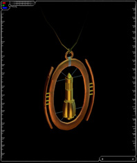

| "Projectile Sniping Specialist" | ||||||
|  | ||||||
| Pendant | ||||||
| this title is only awarded to pilots of the highest caliber. the recipient of this award has achieved high marks in all areas of combat including kills, lowest deaths, kill ratio, gunshot accuracy, and missile accuracy. although this pilot may not lead each of these categories individually, their overall combat average is superior to all other registered TRI pilots. "TRI awards you with this title for superlative and exemplary combat service. you are hereby granted all the rights and privileges associated with this award." |
||||||